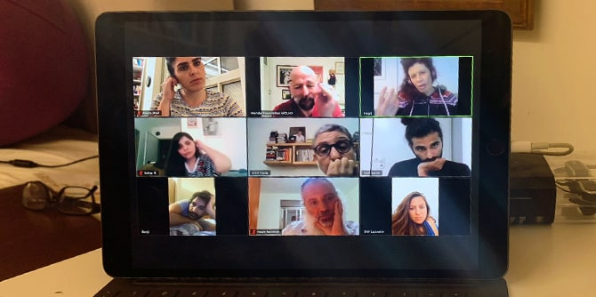

מיותר לציין שמדיניות הבידוד החברתי, הסגר והמעבר ללמידה מרחוק אילצו אותנו לבטל תוכניות ולחשב את מסלול המסע של הקבוצה מחדש. המצב והתנאים החדשים הפגישו אותנו עם לא מעט אתגרים, ובראשם הקושי להיפרד מהמפגש הבלתי אמצעי. אבל, לצד זה, זימן לנו המצב גם מהלך מרתק של התבוננות מחודשת על התוכנית ועל הקבוצה.
כחלק מהתהליך אשררנו וזיקקנו את מה שניסחנו כ"עיקר", אבל בו זמנית יצאנו לחיפוש אחר משאבים, פדגוגיות ויכולות חדשות ומותאמות. מונעים מהרצון לגלות גמישות אבל גם לשמור על יציבות, החלטנו לפצל את יום הלימודים של הקבוצה לשלושה מפגשים שבועיים, שכל אחד מהם נועד לשמש כנשא של אלמנט מפתח אחר של המהלך הכולל.
בהתאם לכך, מדי יום א' בערב נפגשת הקבוצה לקריאת זום צמודה ב"אתיקה" של אריסטו. תוך כדי הלימוד מתחזקת ההבנה והאמונה של היחידים ושל הקבוצה בחשיבותו של תהליך הבירור הערכי. בימי ב' אנו נפגשים ללימוד המקורי שנקבע במתווה התוכנית. במפגשים אלו אנו מקפידים להיצמד לתכנים הנקודתיים ולמהלך התוכני הכולל שנבנה ואושר מראש. בימי ד' בשעות הערב אנו נפגשים למה שאנו מכנים בשם קרון המנהיגות: מפגש וולונטרי שבו מתקיימים שיחה חופשית, החלפת דעות, ויכוח והיוועצות בענייני היום האישיים, הלאומיים והגלובליים.
אחרי ארבעה שבועות של עבודה בפורמט החדש אנחנו שמחים לדווח שאפשר ללמד וללמוד את עיקר החומר בדרכים חדשות ואפילו אקספרימנטליות. אבל מה שבאמת מרגש אותנו הוא הגילוי בדבר עוצמתה של הקבוצה המיוחדת הזאת ויכולתה להעניק לחבריה סיוע ,ביטחון, נחמה ועצה טובה, במיוחד בשעה הנוכחית.

{kind=link}